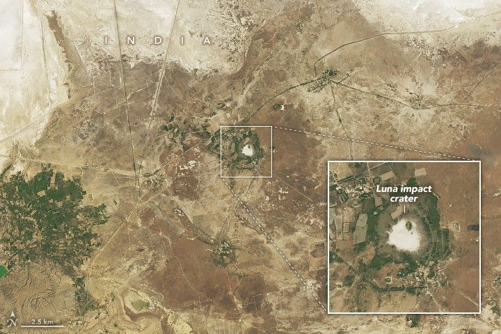

Deciphering India’s Luna Crater
Impact craters exist on every continent on Earth. While many have eroded away or been buried by geologic activity, some remain visible from the ground and from above. This week, we revisit stories featuring some of our most captivating satellite images of impact sites around the planet. The images and text on this page were excerpted from content originally published on April 22, 2024.
In the Kutch district of northwest India, a vast desert where salt is harvested in colorful rectangular ponds stretches to the Arabian Sea. In a neighboring grassland, a less conspicuous circular feature has attracted curiosity in recent decades. Scientists in India had suspected, but not confirmed, that an object from outer space made this mark on the landscape. Now, a geochemical analysis of the structure has revealed it contains the characteristic signatures of a meteorite impact.
Impact craters on our planet are a relative rarity; fewer than 200 structures from around the world are confirmed in the Earth Impact Database. The number of craters is so modest in part because many of the meteorites that survive the trip through Earth’s atmosphere ultimately splash down into water. Of the meteorites that do fall on land, evidence of their impact may be erased by forces such as wind, water, and plate tectonics.
The footprint of the newly studied Luna impact crater—named for its proximity to a village of the same name—is visible in this image, acquired by the OLI (Operational Land Imager) on the Landsat 8 satellite on February 24, 2024. The crater measures approximately 1.8 kilometers (1.1 miles) across, and its outer rim rises about 6 meters (20 feet) above the crater floor.
The Luna structure is situated in India’s Gujarat state in a grassland called the Banni Plains. The Great Rann of Kutch, an expansive white salt desert, lies just to the north. Parts of these low-lying areas are submerged for much of the year, and the Luna crater often contains water. Researchers took advantage of a dry period in May 2022 to collect samples from throughout the structure.
In the rocks and sediments, scientists detected several minerals that are uncommon in natural settings on Earth. These rare minerals form under the extremely high temperatures and pressures generated when a meteorite hits the ground. The researchers also measured anomalously high concentrations of the rare element iridium, consistent with findings at other impact craters.
Based on the radiocarbon dating of plant remnants contained in silt at the site, the team determined the impact occurred about 6,900 years ago. The crater is near the remains of an ancient Harappan settlement, but it is uncertain whether the impact predates the arrival of humans.